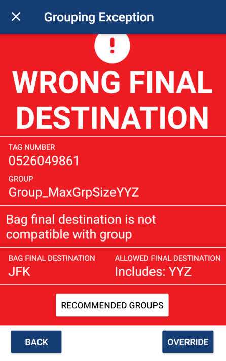

Wesley Renaud wrenaud@uoguelph.ca
Work Sample
A fundamental component of SmartBag's reconciliation system is the concept of grouping. The goal is to logically organize bags by shared characteristics and then perform bulk actions on those groups. Different grouping rules can be applied based on factors such as bag status, weight, and type.
I was assigned to create a Final Destination grouping rule. When a bag is part of the group, the rule checks whether the bag's final destination airport matches a configured list of values. For example, on a transfer route such as YYZ-BOS-JFK, the team may want to track and act on all bags travelling all the way to JFK. A group could therefore be configured for bags with a final destination of JFK. If a bag is loaded into that group without JFK as its final destination, the system generates an exception and, if that exception is overridden, an action item as well.
Building the rule involved several user stories and phases of development:
Part of this work item involved configuring the mobile screen that appears when a bag is loaded into a group but does not satisfy the Final Destination rule. That exception page gives the user a clear explanation of the problem and supports the next step in handling or overriding the exception.
This was an important part of the feature because the rule was not only about validating the data in the background, but also about presenting the exception in a way that fit into the existing operational workflow.
